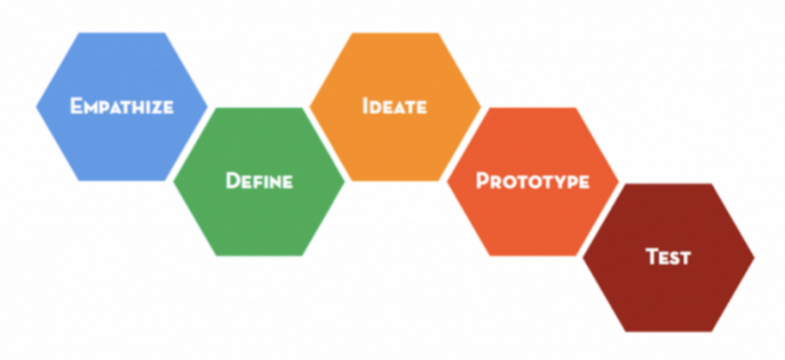

Project Description
During this project, the overarching goal is that our team will be building a prototype to display our representation of what we think “the temperature of the Saint Lucia Campus” means in the form of a physical, interactive and informative product or system. Additionally, this product has to act as some sort of gauge on what the circumstances, moods and other abstract attributes are at a particular focus point on the campus. The premise of this intricate design must entice people’s interest and be developed in a way that is unique.
There are a series of vital steps in accordance with design thinking principles that must be adhered to. However, in a simplified sense, it does follow the basic structure as shown in Figure 1. It has to be noted that there are many iterations that occur in the design process and that each section is much more complex than it seems.

Another integral part of the assignment is submitting process and product deliverables. The process deliverables include the research portfolio, concept portfolio, technologies/surveys, concept maps (2x2), scenario portfolio, selection portfolio and the user evaluation report. These deliverables act as the building blocks of the project and steer the design direction.
Project Vision
Our team project vision is to use our own skills and strengths as well as design thinking principles to create a new and original product that serves as a representation of the “Temperature of the St Lucia Campus”. This can be done by assigning each team member with specific tasks that they are good at and from here dedicating roles. For example, in regards to the product deliverables, the web developer of the product website will be Haw as he has had previous experience in website designing. In addition, Nan has also had experience with media and video making and thus she will be in charge of the kick starter. Sze, Craig and Ryan are going to be the assigned researchers and their jobs will be to compile data and analyse the insights and trends within it.
Our commitment to this project
- Plan out what things we are good at and work on those aspects on the project.
-
Dedicate necessary time and effort to the assignment.
-
To do the very best we can even if it’s seemingly not working out.
- To contribute as much as they can in regards to content hit for the assignment.
- To take accountability for the result we get and let our effort translate into
Communication Guidelines
- Information about the project is only to be discussed within the team.
- Communication will be made through Facebook and email.
- All members are expected to respond to communications from others in a timely and respectful manner. It is the team member’s responsibility to check the Facebook group at least once a day.
- For any immediate concerns, team members will be contacted through mobile.
- Wherever a criticism is needed, it should be given in a constructive and respectful manner.
Team Etiquette (managing work)
- All members can discuss issues about the project openly within the team.
- Any major decisions relating to the development of the project must be discussed and agreed upon by all members.
- All members are committed to their part of the project. If members cannot complete a task in the required time period, they should notify the rest of the team immediately, and additional support from other members will be provided to that task.
- It is encouraged that all the different tasks allocated to team members are to be done in high standard and finished before the due date, so that all necessary revisions or changes can be made.
- All members are expected to pull their weight equally to the amount of work required for the project.
-
Should any conflicts arise, all involved members must try to resolve it peacefully.
Team Management
- If a team member is unable to attend a studio session or meeting, he/she must inform the rest of the team in advance, when possible, either via Facebook or mobile.
- If a member chooses to leave the group, they must have a legitimate reason for doing so. If this occurs the group will look for another member, and contact the tutor, lecturer and course coordinator. If no one can be found, the group will continue the assignment without one member.
- The team member must be on time as this is valuable time to collaborate all of the research and notes we have done and does not make for productive work if there’s only half the group available.
How we will work as a team
To ensure that we work effectively as a team we
- Will always support each other.
- Not limit our efforts to our specified roles but will help each other as much as we possibly can.
- Advise the team if we are not going to be able to meet any deadlines as soon as early as possible.
- Share any resources that we find.
- Be respectful of each other.
- Provide and receive feedback as constructive feedback.
- If anything interesting or related to design thinking appears itself, the information will be sent on the facebook group chat.
If there are any disputes within the team relating to team-work, we will:
- Try and sort out our differences and find a common ground.
- Always try to agree with the general consensus - not one individual has more power than another individual.
- If the issue escalates out of hand, the tutors will be notified to see if they can rectify the issue. This is only as the very last option.